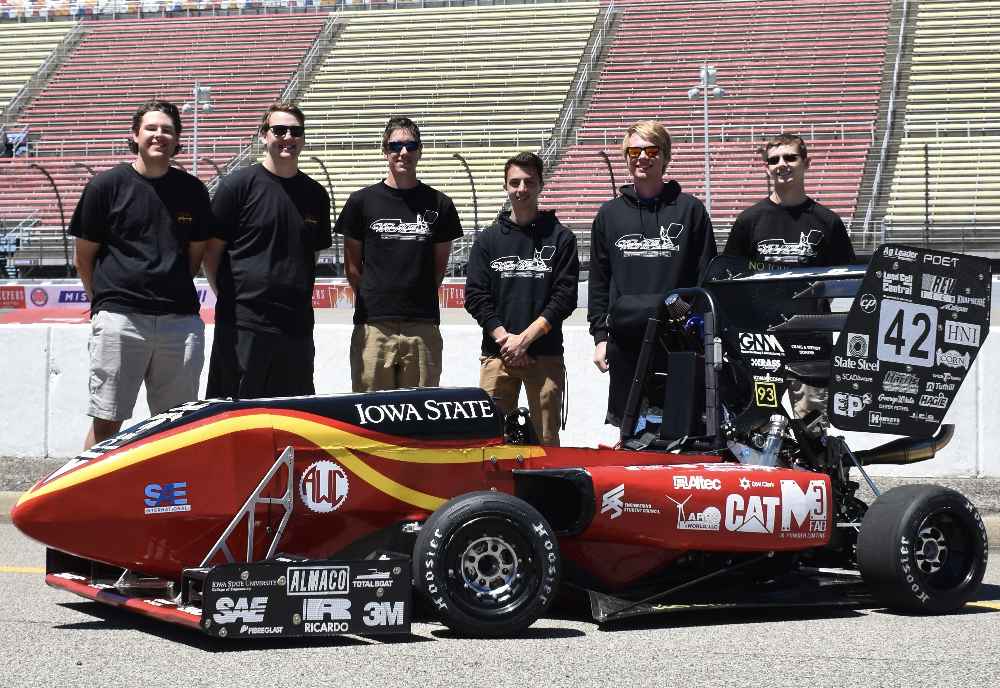

Cyclone Racing Formula SAE Team, Powertrain | Aug 2021 - Present
The Cyclone Racing Formula SAE Team is a student-run organization whose goal is to create a Formula-style race car that can be entered into yearly competitions held by SAE International.
Members must closely adhere to the guidelines set by the team’s technical director, as well as the regulations imposed by Formula SAE’s organizers in order to design a car that is competition-legal.
FSAE Lead Tuning and Systems Engineer | May 2022 - Present
For the 2022 school year, I was elected to lead the vehicle systems and tuning aspects of the car. This role involves designing and maintaining a complete electrical system for the car, including charging, power distribution,
and wiring. I am also responsible for performing engine calibration, which relies on data analysis to ensure that we are extracting maximum power from the engine while remaining within safe operating limits.
Being a part of this team has provided me with valuable exposure to engineering principles, and experience working in a fast-paced collaborative environment.

Freshmen Leaders in Engineering | Aug 2020 - Apr 2021
ISU Freshmen Leaders in Engineering is an organization that aims to serve as a method of outreach to current and incoming
freshmen regarding events and involvement at Iowa State. While we were very restricted in terms of activites as a result of the COVID pandemic,
during my time as a member of this group, we planned and executed a fundraiser for the ISU food pantry, and also utilized 360-degree video capture
technology to create orientation videos for prospective international students.
WNHS ACES Academic Team | Jan 2018 - May 2020
I was involved in my high school’s engineering and science academics team from my sophomore year to the end of my senior year. Every member was responsible for studying two
subjects that they would subsequently be tested on across several competitions later in the year. We placed first as a team at the regional event in
2019 and 2020, and placed second at the sectional event in 2019. As an individual, I placed first in the subject of engineering graphics at the 2019
regional event, and came third in the same in 2018 and 2020.
WNHS Band Section Leader | Aug 2019 - May 2020
As trumpet section leader in my high school’s top band, I was responsible for acquainting newcomers with the marching band program, as well as
planning some of the choreography for the fall 2019 season. I also collaborated with other section leaders to coordinate activities and build
relationships between all members of the band.